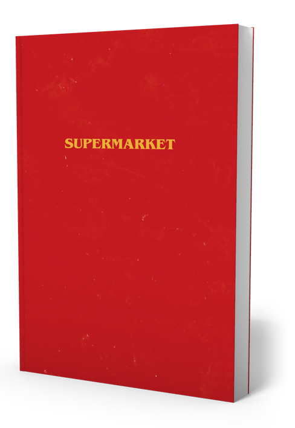

Supermarket
Summary (GoodReads): Flynn is stuck—depressed, recently dumped, and living at his mom’s house. The supermarket was supposed to change all that. An ordinary job and a steady check. Work isn’t work when it’s saving you from yourself. But things aren’t quite as they seem in these aisles. Arriving to work one day to a crime scene, Flynn’s world collapses as the secrets of his tortured mind are revealed. And Flynn doesn’t want to go looking for answers at the supermarket. Because something there seems to be looking for him. A darkly funny psychological thriller, Supermarket is a gripping exploration into madness and creativity. Who knew you could find sex, drugs, and murder all in aisle nine?
Google Books (About the Author): Bobby Hall a.k.a. Logic, the Grammy-nominated, platinum-selling recording artist, quickly established himself as one of the most original young stars in music. Through a streak of hit records, Bobby Hall has cemented his status as one of the greatest MCs at work, hailed for his lyricism, cinematic storytelling, and inspiring message of peace, love, and positivity. His music touches on societal issues that affect us all, including anxiety, depression, and race. Supermarket is his first novel.